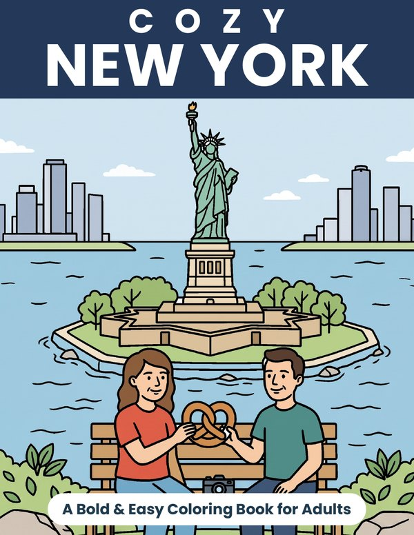
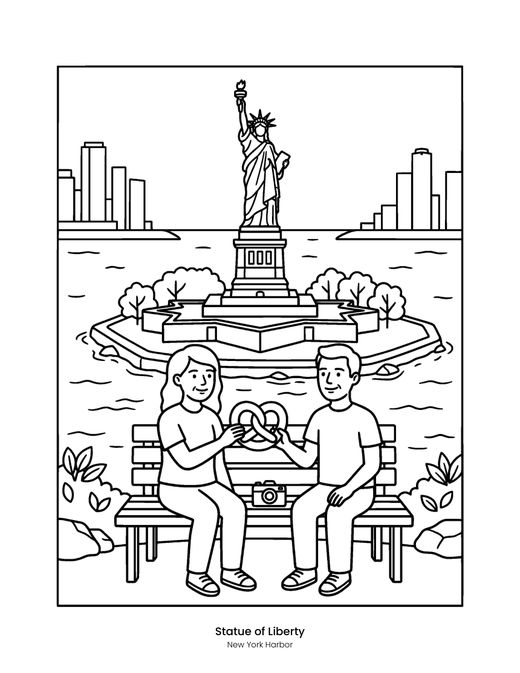
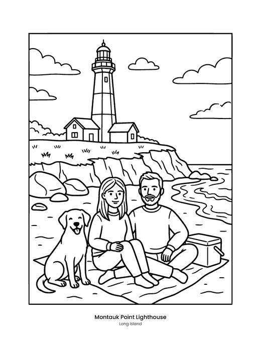
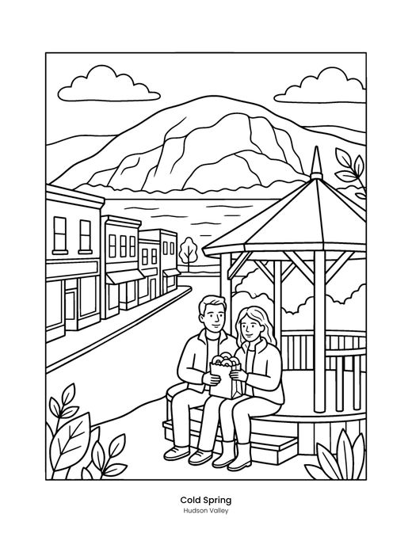
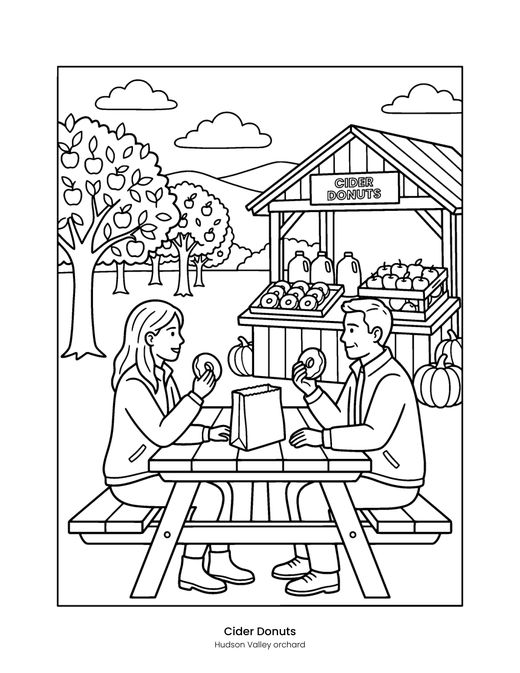
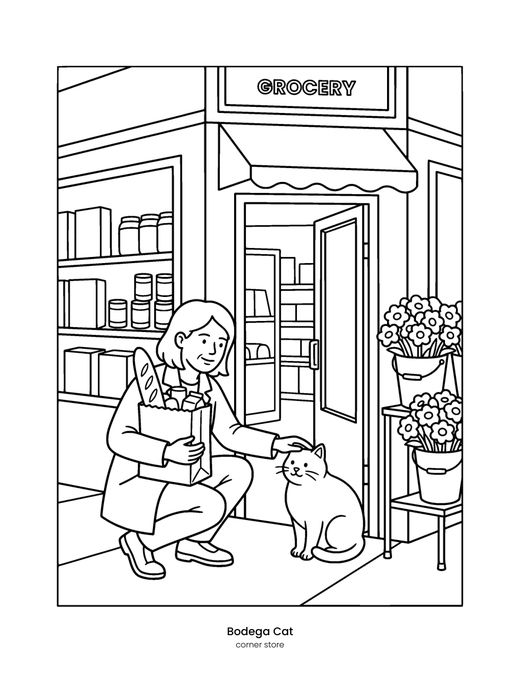
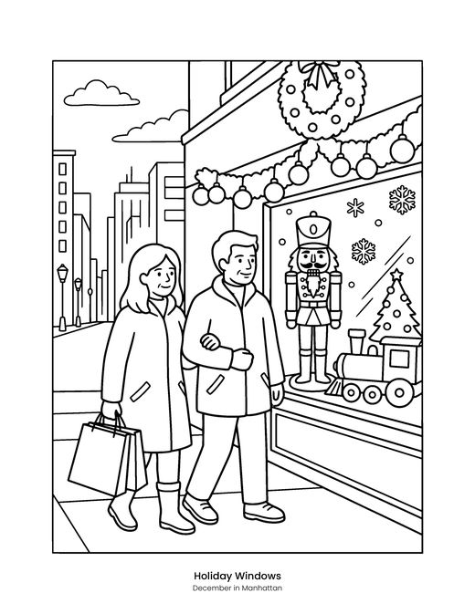
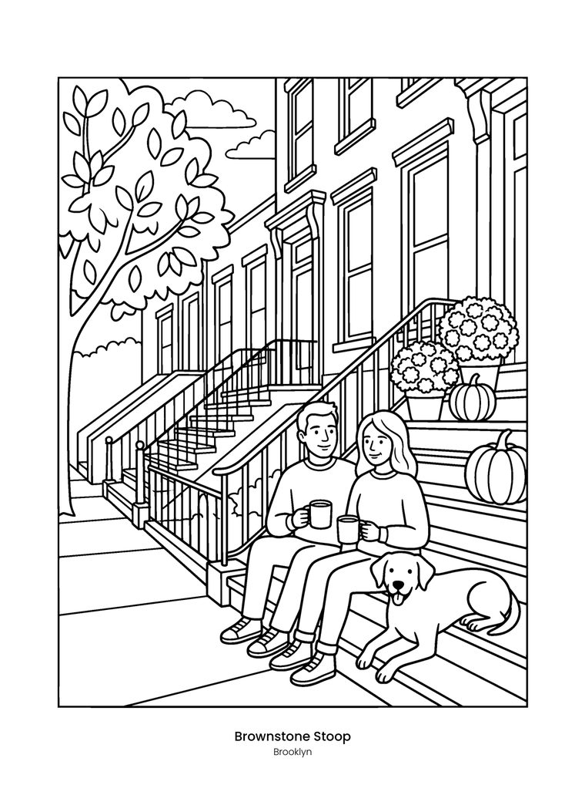
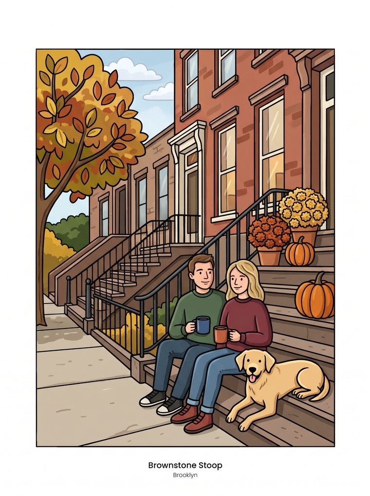
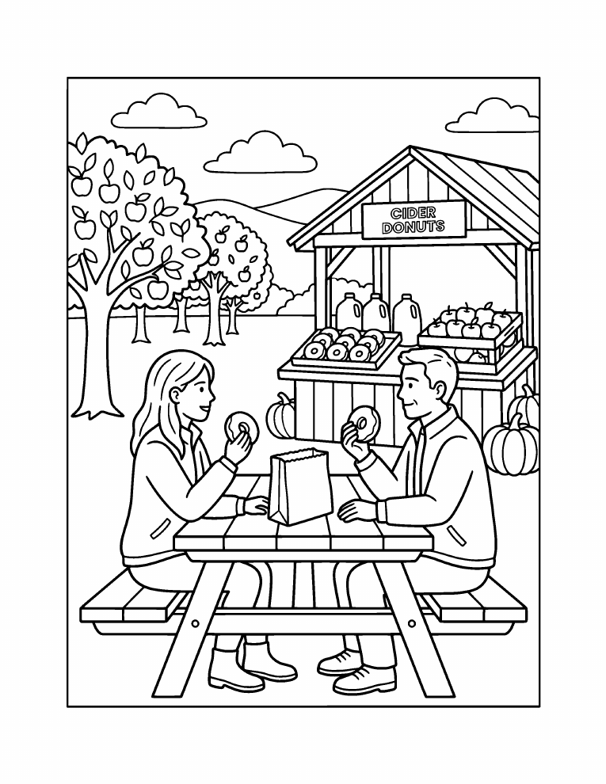

Cozy New York: a coloring book for adults
City streets, brownstones, bagels and autumn orchards upstate. 40 New York scenes in bold, easy lines, so you can finish a page in an evening.
- 40 scenes
- Single-sided pages
- Every place captioned
- 8.5 x 11 in paperback
Look inside
Six of the 40 pages. Each scene sits on its own page with a blank back, so markers won't bleed onto the next one.












All 40 scenes in the book
Every page is captioned with its place, and the book ends with an overview of all places.
- Statue of Liberty New York Harbor
- Brooklyn Bridge New York City
- Niagara Falls Western New York
- Bow Bridge Central Park, Manhattan
- Adirondack Lake Adirondack Mountains
- Letchworth Gorge Letchworth State Park
- Bear Mountain Bridge Hudson Valley
- Gorge Trail Finger Lakes
- Montauk Point Lighthouse Long Island
- Kaaterskill Falls Catskill Mountains
- Manhattan Bridge Brooklyn waterfront
- Brownstone Stoop Brooklyn
- Village Café Greenwich Village
- Coney Island Boardwalk Brooklyn
- Taxi Street Manhattan
- River Train Hudson River
- Cold Spring Hudson Valley
- Saratoga Springs Upstate New York
- Cooperstown Otsego Lake
- Sag Harbor Long Island
- New York Bagels a city morning
- Pizza by the Slice a city classic
- Hot Dog Cart street food
- Cider Donuts Hudson Valley orchard
- Wine Tasting Finger Lakes
- Corner Bookshop city life
- Rooftop Garden city summer
- Fire Escape Reading apartment life
- Harbor Ferry New York Harbor
- Adirondack Chairs lakeside dock
- Catskills Cabin mountain weekend
- Bodega Cat corner store
- Ice Skating winter in the park
- Beaver the state animal
- Eastern Bluebird the state bird
- Sugar Maple the state tree
- Rose Garden the state flower
- Apple Picking the state fruit
- Snow Day winter in the city
- Holiday Windows December in Manhattan


From line art to a finished page
One page from the book, colored in as an example. Your colors, your pace: there is no wrong way to color a cozy place.
View on Amazon
Free page: Cider donuts at the orchard
Print one page from Cozy New York for free and see if the style suits you.
Get the free pageReady to color?
Cozy New York is part of the Cozy States series: one book per state, all in the same calm, bold style.
More cozy coloring books
Every book in the same calm style, each with its own places.